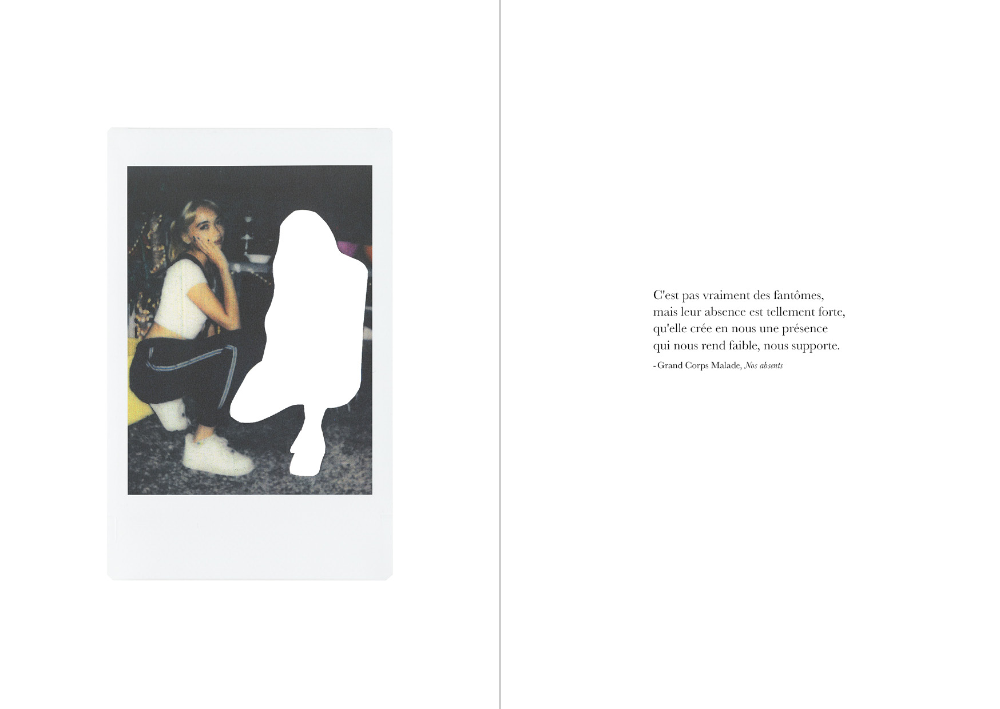
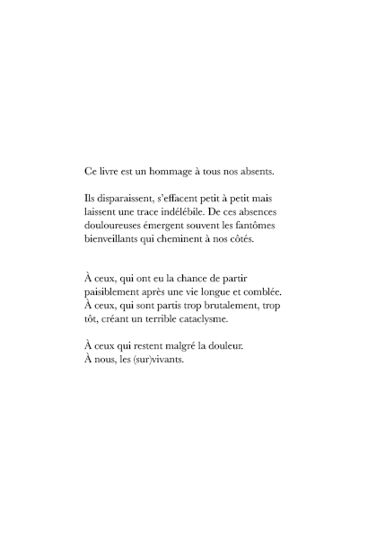
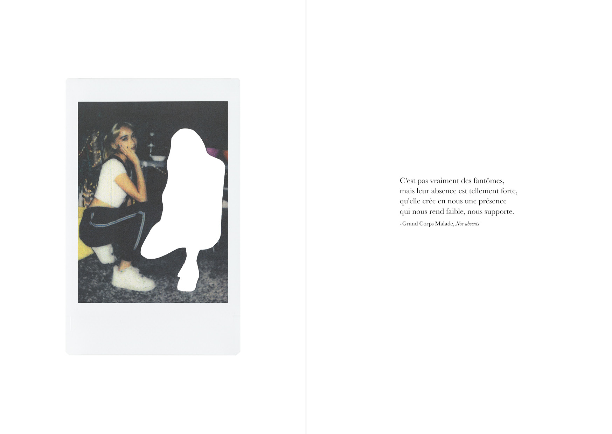
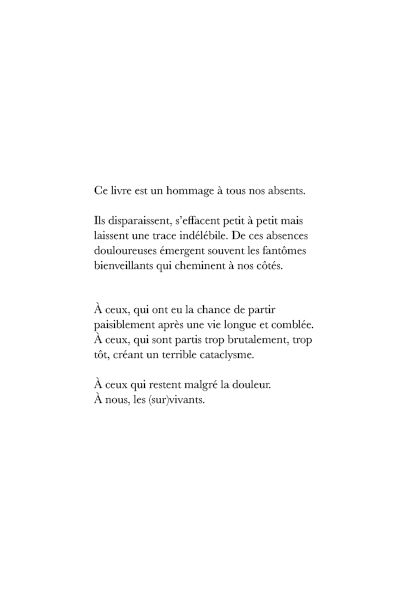

> Expérimentations sur les polaroïds
À partir d'une collection personnelle
de polaroïds, j'ai voulu aborder le thème de la disparition et de l'absence en effectuant un rapport texte-image grâce à des paroles de chansons françaises ; avec pour but final la création d'une micro-édition.
 



> Pages extraites de l'édition